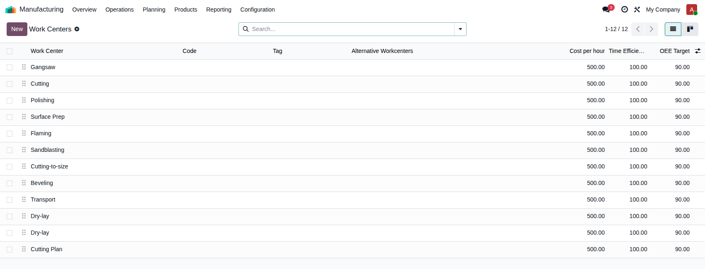
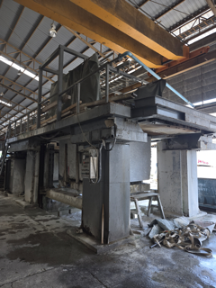
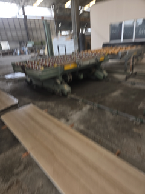
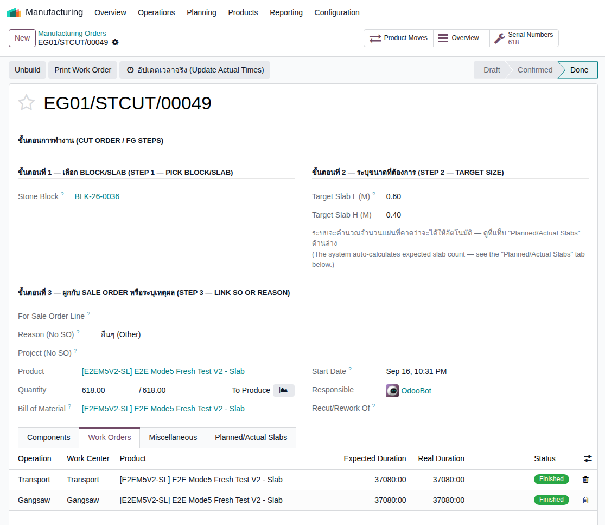
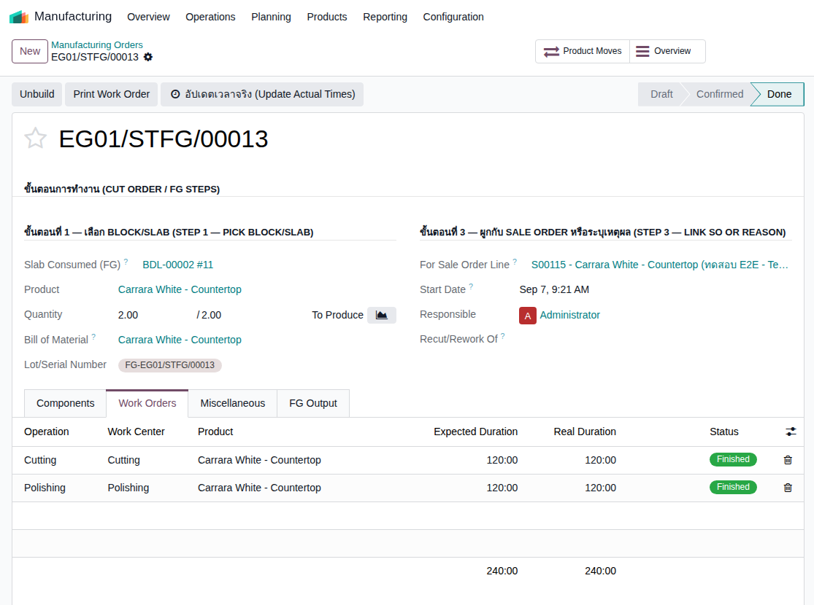
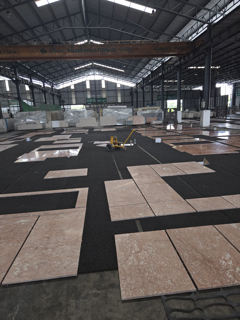
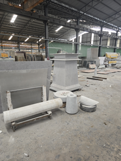
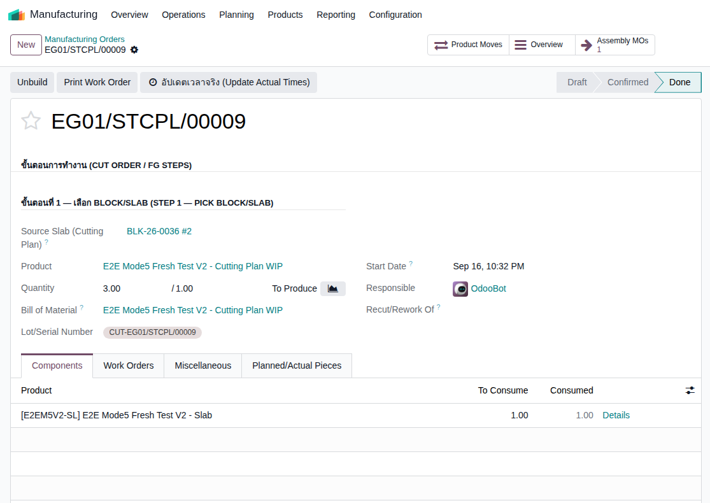
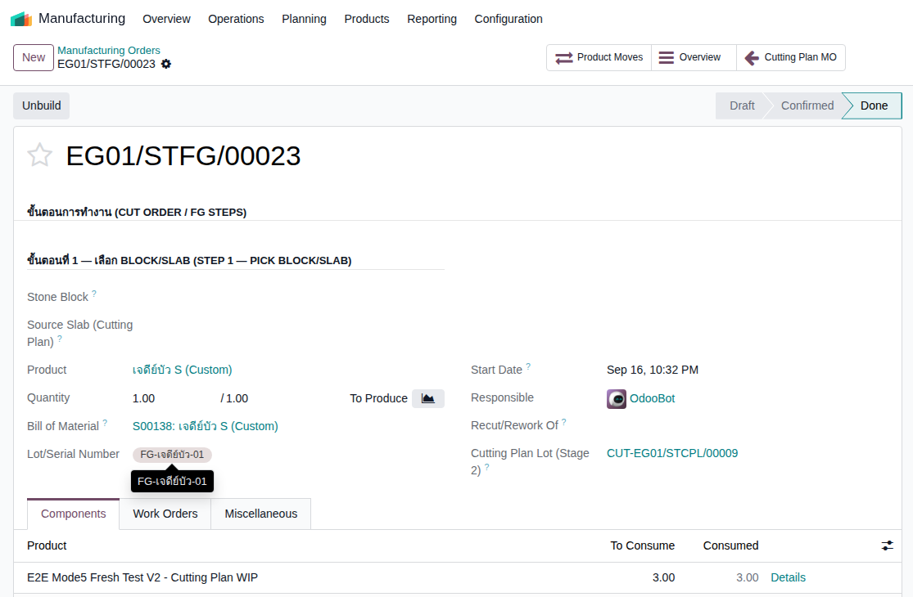
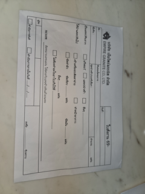

3·2·1
Empire Granite · Stone Slab Inventory — Internal Team Discussion
EG-321 Production Line
1 สายการผลิตเดียว บน Odoo MRP
1 สายการผลิตเดียว บน Odoo MRP
เจาะรายละเอียดสายการผลิตจริงที่รองรับแนวคิด EG-321 — สถานีจริงในโรงงาน, กลไก Odoo ที่ใช้, และ flow การทำงานจริงที่ verify แล้วในระบบ
EMG-O · ประชุมทีมภายใน
อัปเดตล่าสุด: 17 ก.ย. 2026
ทวนความเดิม
Recap: แนวคิด "EG-321"
3 จุดขาย
+
2 สวิตช์
+
1 Production Line
Block→
Slab→
FG
ขายได้ทั้ง 3 จุดบนสายเดียวกัน + แปะสวิตช์ Project/BOQ ได้ทุกจุด
Deck นี้เจาะเฉพาะส่วน "1 Production Line" — ว่าสายการผลิตเดียวที่ว่านี้ ในความเป็นจริงมี Work Center อะไรบ้าง ระบบ Odoo MRP เอา feature ไหนมารองรับ และ flow การทำงานจริงเป็นอย่างไร
EMG-O · EG-321 Production Line
แนวคิดหลัก
"1 Production Line เดียว" หมายความว่าอย่างไร
🏭
ความจริงหน้างาน
โรงงานมีสายการผลิตจริงแค่ เส้นเดียว — Block เข้าประตูเดียวกัน ผ่านเครื่องจักรชุดเดียวกัน ไม่มีสายแยกสำหรับ "งาน Block-only" กับ "งาน FG" คนละสาย
- 1จุดขาย = จุดที่ "หยุดขาย" บนสายนี้ ไม่ใช่คนละสายการผลิต — ขาย Block คือหยุดตั้งแต่ยังไม่ตัด, ขาย Slab คือหยุดหลัง Gangsaw, ขาย FG คือเดินสายจนสุด
- 2ความซับซ้อนจริงอยู่ที่ "ใช้สถานีไหนบ้าง" ไม่ใช่ "มีสายกี่สาย" — งาน FG แต่ละ Category ผ่านสถานีแปรรูปไม่เท่ากัน (Countertop ผ่าน 2 สถานี, งานอื่นอาจผ่านมากกว่านั้น)
- 3งานพิเศษ (Custom-Carved) ก็ยังเดินบนสายเดียวกัน แค่มีขั้นตอนย่อยเพิ่ม (ตัดชิ้น+ประกอบ) ก่อนถึงปลายทาง FG
ทำไมออกแบบแบบนี้: ถ้าแยกเป็นหลายสายตามจุดขาย ระบบจะต้องมีกลไกซ้ำซ้อนหลายชุด — ออกแบบเป็นสายเดียว+Route ที่ปรับได้ต่อสินค้า ทำให้ดูแล/ต่อยอดง่ายกว่ามาก
EMG-O · EG-321 Production Line
Odoo MRP รองรับแนวคิดนี้อย่างไร
แนวคิด → Odoo Feature ที่ใช้จริง
| แนวคิดจริงในโรงงาน | Odoo Feature | บทบาทในระบบ |
|---|---|---|
| สถานีจริง (Gangsaw, Polishing, Beveling ฯลฯ) | mrp.workcenterWork Center | หน่วยจริงที่งานไปเข้าคิว จับเวลา และคิดต้นทุนแรงงาน (costs_hour) |
| สูตร+เส้นทางการผลิต ต่อสินค้าแต่ละแบบ | mrp.bom + operation_idsBOM + Routing | กำหนดว่าสินค้านี้ต้องผ่านสถานีไหนบ้าง ตามลำดับไหน — FG Category ต่างกัน routing ต่างกัน |
| ใบสั่งผลิตจริง ต่อ 1 งาน | mrp.productionManufacturing Order | Admin สร้างเอง เลือก Block/Slab+รายละเอียดตอนทำ MO โดยตรง — ไม่ผ่าน wizard กลาง (ADR-062) |
| งานที่คิวอยู่แต่ละสถานี | mrp.workorderWork Order | ติดตามสถานะ+เวลาจริงต่อสถานีของ MO นั้น |
| จุดตรวจคุณภาพ ก่อนส่งของ (Dry-lay) | quality.point / quality.check | ผูกกับ operation แบบ native อัตโนมัติ — ไม่ต้องสร้าง model ใหม่ (ADR-063) |
| รวมชิ้นส่วนย่อยหลายชิ้น รอประกอบ (งานพิเศษ) | stock.lotLot Tracking | 1 Lot กลางรวม N ชิ้นจาก Cutting Plan ให้ Assembly MO ดึงไปใช้ (ADR-068) |
EMG-O · EG-321 Production Line
ของจริงในระบบ
Work Center ทั้งหมดที่มีอยู่จริงวันนี้ (Empire Granite)

SCREENSHOT จริงManufacturing ▸ Configuration ▸ Work Centers — mbx-ee-dev
8 สถานีมาตรฐาน (ADR-062): Gangsaw, Transport, Surface Prep, Polishing, Flaming, Sandblasting, Cutting-to-size, Beveling — ตั้งชื่อเดียวกันทุกบริษัทที่ทำหิน
Dry-lay คือสถานี QC (ADR-063), Cutting Plan คือสถานีเสมือนสำหรับงาน Custom-carved (ADR-068)
หมายเหตุตรงไปตรงมา: ยังมีชื่อเก่า "Cutting" ปนอยู่ 1 แถว — เป็นชื่อก่อน ADR-062 เปลี่ยนมาตรฐาน ยังผูกกับ BOM Countertop เดิมที่ใช้งานจริงอยู่ ไม่ใช่ข้อมูลผิด แค่ยังไม่ได้ migrate ชื่อ
EMG-O · EG-321 Production Line
Flow จริง — ช่วงที่ 1
Block → Slab: Gangsaw + Transport

รูปจริงจาก Visit 11 ก.ย.เครื่อง Gangsaw จริงในโรงงาน

รูปจริงจาก Visit 11 ก.ย.รถเข็น/รางลูกกลิ้งขนย้ายแผ่น (Transport)

SCREENSHOT จริงMO จริง (ทดสอบ) — Work Orders: Transport + Gangsaw
Mechanism: Admin สร้าง MO เอง เลือก Block + ระบุ Target Slab Size — ระบบคำนวณจำนวนแผ่นที่คาดว่าจะได้อัตโนมัติ แล้วบันทึกจำนวนจริงหลังตัด เทียบ yield% ได้ (ADR-066, MTS = Admin-driven ไม่ใช่ wizard)
EMG-O · EG-321 Production Line
Flow จริง — ช่วงที่ 2
Slab → FG: เลือกเฉพาะสถานีที่ FG Category ต้องการ

รูปจริงจาก Visit 11 ก.ย.Bridge Saw ตัดขนาดจริง (Cutting-to-size)

รูปจริงจาก Visit 11 ก.ย.แผ่นหินขัดมันจริง (Polishing)

SCREENSHOT จริงMO จริง Countertop — Work Orders: Cutting + Polishing
Mechanism: แต่ละ FG Category มี routing ของตัวเอง (
stone_fg_operation_ids) — Countertop ผ่านแค่ 2 สถานี งานอื่นอาจผ่านมากกว่านั้น ไม่มีสูตรตายตัวว่าต้องผ่านครบ 6 สถานี (ADR-029/067)EMG-O · EG-321 Production Line
Flow จริง — จุดตรวจสอบ
Dry-lay = จุด QC ก่อนส่งของ

รูปจริงจาก Visit 11 ก.ย.ชิ้นหินตัดจริงวางเรียงเป็นแพทเทิร์นให้ลูกค้าดูก่อนส่ง
Mechanism: operation ชื่อ "Dry-lay" บน BOM ไหนก็ตาม จะสร้าง Quality Check ให้อัตโนมัติแบบ native (
quality.point) — ไม่ต้องสร้าง model ใหม่ (ADR-063)ตรงไปตรงมา: กลไกนี้ verify ผ่าน
odoo shell แล้วว่าทำงานถูกต้อง แต่ ณ วันนี้ยังไม่มี MO จริงที่เดินผ่านจุดนี้ในระบบ — จึงยังไม่มี screenshot จริงให้ดู ใช้รูปจากโรงงานแทนEMG-O · EG-321 Production Line
งานพิเศษบนจุดขาย FG
Custom-Carved FG (เจดีย์บัว) — Sub-pipeline 3 ขั้น
1. หา Slab→
2. Cutting Plan (Lot)→
3. Assembly

รูปจริงจาก Visit 11 ก.ย.ของแกะสลัก/หล่อสำเร็จรูปจริงในโรงงาน

SCREENSHOT จริงStage 2 MO — ผลิต Cutting Plan Lot

SCREENSHOT จริงStage 3 MO — เจดีย์บัว S (Custom), ดึง Lot มาประกอบ
Mechanism: Stage 2 ตัด Slab เป็น N ชิ้น รวมเป็น 1 Lot กลาง (
stock.lot) — Stage 3 ดึงทั้ง Lot มาประกอบใน MO เดียว ได้ FG สำเร็จรูป พร้อม smart button เชื่อม 2 MO กลับไปมา (ADR-068)EMG-O · EG-321 Production Line
เบื้องหลัง
กระดาษจริงหน้างาน → กลไกดิจิทัลในระบบ

รูปจริงจาก Visit 11 ก.ย.ใบรายงานตัดแสลปกระดาษจริงของโรงงาน
ที่มาของ Planned/Actual Slabs (ADR-066): โรงงานมีกระบวนการกระดาษอยู่แล้ว — ประเมินจำนวนแผ่นที่คาดว่าจะได้ก่อนตัด แล้วบันทึกจำนวน/ขนาดจริงหลังตัด เทียบส่วนต่างเป็น yield% ตามมาตรฐานที่ทำอยู่จริง
ทำไมสำคัญ: ฟีเจอร์ในระบบไม่ได้คิดขึ้นเองลอยๆ — ออกแบบให้ตรงกับกระบวนการกระดาษจริงที่หน้างานทำอยู่แล้ว ลดของใหม่ที่ทีมต้องเรียนรู้เพิ่ม
EMG-O · EG-321 Production Line
สรุปรวม
1 Production Line เต็มสาย — จาก Block ถึง FG
Block→
Gangsaw→
Transport→
Slab
Slab→
6 สถานีแปรรูป (เลือกตาม FG Category)→
Dry-lay (QC)→
FG
งานพิเศษ: Slab → Cutting Plan (Lot) → Assembly→
FG (Custom)
✓
สถานะ
ทุกช่วงของสายนี้ verify แล้วในระบบจริง (odoo shell + Playwright) — เหลือแค่ Dry-lay ที่ยังไม่มี MO จริงผ่านจุดนี้
EMG-O · EG-321 Production Line — 17 ก.ย. 2026